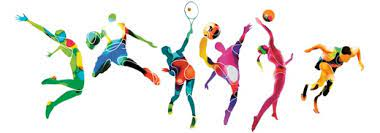

Idrotten är rolig eftersom vi inte gör så mycket på lektionerna. Vi leker mest olika lekar vilket är roligt eftersom man får bonda och umgås med de andra i klassen utanfr ett klassrum. Det är även bra för att man får röra på sig.
Jag gillar Webbutveckling eftersom att jag tycker att det är kul att programera. Vi har även en bra lärare vilket gör det bättre. Webbutveckling är även en bra kunskap att ha i arbetslivet då man kan få jobb genom det.
